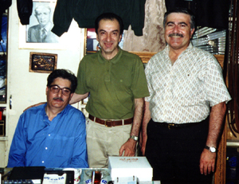
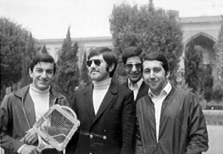
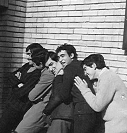
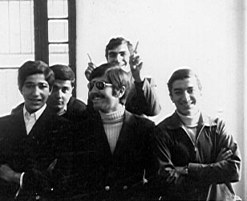

Kambiz Kashani
We were classmates in Alborz High School. He now lives in the US. We found each other on the Net recently. He had a short trip to Tehran in June 2000. We went to see another classmate, Farrokh Ghasemi in his shop in central Tehran. This is a picture of the event.

Farrokh Ghasemi, Ali Parsa, Kambiz Kashani. Tehran, June 2000.

Ali Parsa, Kambiz Kashani, Amir Yousefi, Iraj Omidi. Alborz Highschool, Tehran 1968.

